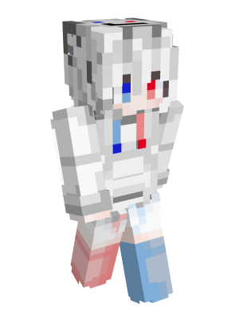

住在这片海里的常驻玩家。出于隐私考虑，这里只展示称呼、头衔与游戏名牌，不涉及任何游戏 ID。
4 位常驻 · 熟人圈子，各有各的活儿
这片海只留给真正的老朋友，位置不多，但很温暖。
维护这片海的人，和最早游进来的那条大蛇

两年里从零搭起了 Blue Shark：内网穿透、Mohist 双生态、动态经济…… 名牌前前后后都是乱码，人却一直很靠谱——他不怎么说话，但服务器一直在稳稳地游。
最早游进这片海的老朋友，两年里一直守着这里的烟火气。种田、唠嗑、慢慢玩， 一支烟的功夫，世界就安静下来。
各有擅长的老朋友
服务器里的"养老担当"，节奏最慢的一个。上线多半在种田、喂动物、和队友唠嗑——一支烟的功夫，世界就安静下来。
主城附近最显眼的房子基本都出自 TA 之手。一亩三分地，也能改造成让人愿意停下来看的风景。
沉迷红石与自动化，服务器里多数"奇迹"背后都有一套 TA 的红石装置。破面只是外表，大佬是真本事。
一片海，各自守着各自的活儿
服主，负责服务器搭建、插件与经济系统——让这片海稳稳地游。
节奏最慢的那个，负责种田、唠嗑、让服务器有人味、有烟火气。
建筑与地形改造，负责让一亩三分地也变成风景。
红石与自动化，负责把效率提上去，让大家的机器跑得更欢。